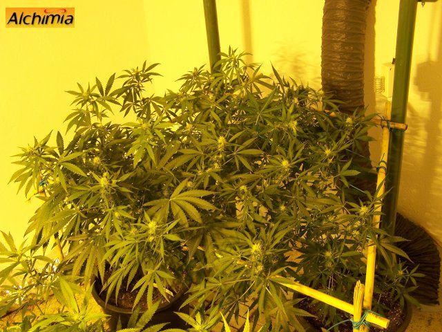

Scrog

Pour ce mode de culture, on comptera de une à 5 plantes de cannabis pour une chambre de culture d'environ un mètre carré. Au final la production sera la même, que l'on aie cultivé une ou cinq plantes, la seule variable sera le temps de croissance nécessaire pour remplir la surface disponible.
Pour réaliser le Scrog, nous aurons besoin d'installer un filet ou une grille (de préférence en bambou de 6/8mm de diamètre) avec des mailles de 5 à 10 centimètres, à une vingtaine de centimètres au dessus des pots. Lorsque les plantes atteignent la grille, il faudra y enrouler les branches pour ne pas les laisser dépasser en hauteur: ceci aura pour effet de favoriser les ramifications, plutôt que la pousse apicale.
Ce procédé doit continuer jusqu'à ce que plus ou moins 70% de la surface du grillage soit occupée par les plantes, selon les variétés cultivées, leur vigueur végétative et leur comportement lors du passage en floraison. Nous arrivons au moment de passer de la photopériode de croissance (18/6) à celle de la floraison (12/12). Pendant les premiers jours de floraison, les plantes de cannabis continuent à grandir, ce qui leur permettra de finir la colonisation du grillage. Lors du passage en floraison, puis pendant la maturation, un maximum de fleurs est au même niveau sous l'ampoule, pour une qualité optimale, sans fleurs aérées de seconde qualité.
En ce qui concerne la floraison, elle se déroule exactement de la même façon que dans tout type de culture conventionnelle, sans besoins particuliers.
Ce mode de culture est recommandé pour les variétés de Cannabis Sativa, qui ont une croissance démesurée et sont difficiles à contrôler dans des chambres de culture aux dimensions réduites, où elles rempliront très rapidement le grillage, ou plus généralement pour tout type de plantes en espaces réduits et/ou avec des éclairages à faible pénétration lumineuse (lampes basse consommation par exemple). Toutes les variétés peuvent être cultivées en scrog, il faudra simplement s'adapter selon le comportement des plantes: pour une variété 100% sativa, il sera préférable de ne pas dépasser 50/60% du grillage avant de passer en floraison; tandis qu'avec une variété 100% indica il faudra attendre jusqu'à 80% de la surface du grillage occupée par les plantes avant de passer en floraison.
Si nous voulons cultiver une seule plante sur un mètre carré avec cette méthode, il faudra utiliser un pot de 25 litres, pour 5 à 7 semaines de croissance en moyenne, le temps nécessaire pour que 70% du grillage soit occupé par les plantes. Il sera alors temps de passer en floraison (cycle lumineux de 12/12), le "stretch" (ou croissance végétative pré florale) des plantes pendant les premières semaines permettra de finir de coloniser le grillage, avant que les plantes ne se concentrent sur la maturation des fleurs.
Si nous souhaitons cultiver 3 à 5 plantes par mètre carré en Scrog, des pots d'approximativement 12 litres et 3 à 5 semaines de croissance suffiront.
Un des grands avantages offerts par ce système de culture, quelque soit le type de plantes choisi, à partir de graines ou de boutures, est le peu d’entretien demandé: une fois les branches attachées à leur support, il suffit d'arroser une, trois ou cinq plantes de cannabis, ce qui représente beaucoup moins de travail que les dizaines de petites plantes nécessaires aux autres méthodes de cultures à haut rendement, comme le "SOG" ou Sea of Green (marée verte).